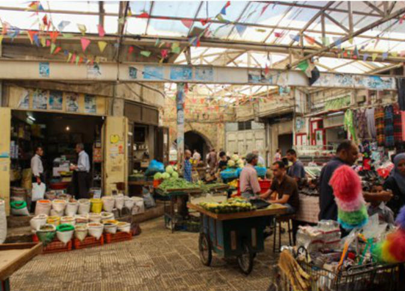
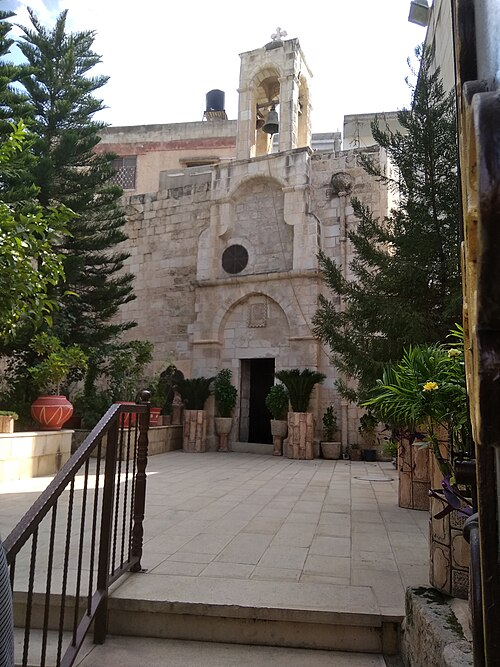

الجامع الكبير
جامع جنين الكبير أو الجامع الكبير مسجد أثري يعود للحقبة العثمانية في فلسطين، يقع وسط مدينة جنين شمال الضفة الغربية.
ويعتبر أهم المعالم التاريخية في المدينة، والذي أقامته فاطمة خاتون ابنة محمد بك بن السلطان الملك الاشرف قانصوة الغوري بل هو من أبرز المعالم التاريخية في الحضارة الإسلامية في جنين
كما يعد هذا المسجد من أقدم التحف المعمارية العثمانية في البلاد
يشار إلى أنه في المدينة مسجد آخر يشبهه يدعى المسجد الصغير. وهو مشابه في تصميمه جامع الجزار في عكا والمسجد الكبير في الرملة.
سوق السيباط

سوق السيباط في جنين سوق أثري تم بناؤه أثناء الحقبة العثمانية في فلسطين.
والسيباط كلمة عربية معناها بناء كبير مسقوف له طريقان للدخول وللخروج.
يقع سوق السيباط في مدينة جنين بين حارتي البلدة القديمة في جنين،
وله خمسة منافذ. ويقع مدخله الرئيسي تحت مقر مكتبة بلدية جنين، التي كانت في السابق مقر بلدية جنين.
السرايا العثمانية
تُشير "السرايا" في السياق العثماني إلى المقار الحكومية الإقليمية،
التي كانت تمثّل امتدادًا للفعل الإداري والسلطة المركزية داخل المدن والمحافظات الفلســـطينية تحت الحكم العثماني.
تُستخدم الكلمة أحيانًا للدلالة على مقرات الحكام المحليين وشيوخ القبائل،
وقد شغلت أدوارًا متعددة كنقطة تواصل بين الحكم المركزي والعشائر المحلية
كنيسة برقين

كنيسة القديس جرجس أو كنيسة برقين كنيسة أرثوذكسية أثرية،
تم بناء معظمها في الفترة البيزنطية، تقع في بلدة برقين شمال الضفة الغربية،
وهي رابع أقدم كنيسة في العالم،
خامس موقع كنيسي في العالم كله. تقع الكنيسة على تلة صغيرة، تشرف على شارع رئيسي يوصل بلدة برقين بالمدن والقرى المجاورة
لا تعتبر اليوم أشهر معالم البلدة فحسب، بل من أهم المعالم التاريخية بالضفة الغربية
خطوات زيارة كنيسة برقين
- الوصول إلى كنيسة برقين
- التعرّف على تاريخ الكنيسة القديم
- مشاهدة المغارة الأثرية الموجودة داخل الكنيسة
- التعرّف على قصة شفاء البرص العشرة المرتبطة بالمكان
- مشاهدة المعالم والقطع الأثرية الموجودة في الكنيسة